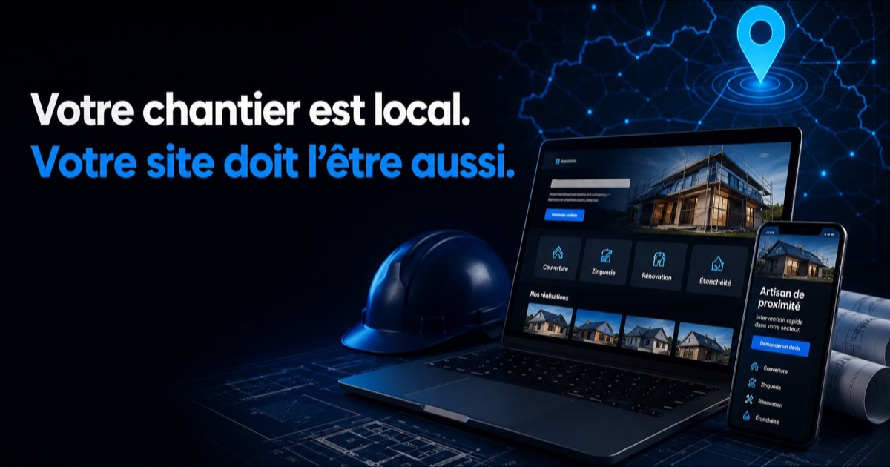

Pourquoi un site d'artisan se joue sur le local, pas sur le design
Parce que votre client ne cherche pas « couvreur », il cherche un couvreur qui peut venir chez lui cette semaine. Un site d'artisan qui ne dit pas où il intervient, avec quels moyens et sur quels délais, reste une plaquette : joli, coûteux, sans effet sur le carnet de commandes.
La donnée publique éclaire la situation réelle du secteur. D'après le Baromètre France Num 2025, mené auprès de 11 021 entreprises dont 7 978 TPE, 65 % des TPE-PME possèdent un site internet présentant leur activité — contre 81 % des PME. Autrement dit, sur le segment des très petites entreprises, un tiers du marché n'a toujours aucune page à son nom. Et 50 % se contentent d'une inscription à un annuaire gratuit, c'est-à-dire d'une fiche qu'elles ne contrôlent pas.
La même enquête relève un point qui parle à beaucoup d'artisans : 37 % des TPE-PME déclarent avoir des difficultés à trouver un prestataire numérique adapté, en hausse de 15 points en un an. Ce n'est pas un problème d'offre — les agences ne manquent pas. C'est un problème de traduction : peu de prestataires savent parler chantier, zone d'intervention et saisonnalité.
Ce que contient un site d'artisan qui déclenche des demandes de devis
Cinq blocs, et ils comptent tous les cinq. Un site d'artisan qui en oublie un se fait dépasser par un concurrent moins bien dessiné mais mieux structuré.
- Une zone d'intervention explicite — les communes réellement couvertes, écrites en clair, pas une carte décorative. C'est le signal que Google croise avec la position du chercheur ;
- Une page par prestation — « rénovation de toiture » et « zinguerie » ne se cherchent pas avec les mêmes mots et n'ont pas le même client ;
- Des chantiers réels en photo, datés et localisés — l'avant-après est le seul argument qu'un concurrent ne peut pas copier ;
- Un parcours de devis court — téléphone cliquable en permanence, formulaire de 4 champs maximum, réponse annoncée sous 48 h ;
- Les mentions professionnelles obligatoires, au bon endroit et sous la bonne forme — le point traité en détail ci-dessous.
Ces fondations sont les mêmes que sur toute création de site internet que nous livrons ; ce qui change pour un artisan, c'est l'ordre de priorité. Le local passe devant le national, la preuve passe devant l'esthétique, et le téléphone passe devant le formulaire.
Ce que la loi encadre réellement sur le site d'un artisan
Trois obligations distinctes, souvent confondues sur les pages concurrentes. Nous les séparons, parce que se tromper coûte de l'argent et que promettre une conformité qu'on n'apporte pas est un mauvais départ.
- Les mentions légales du site. L'article 6-III de la loi n° 2004-575 du 21 juin 2004 pour la confiance dans l'économie numérique impose de publier votre identité, votre adresse, votre téléphone, votre numéro d'inscription au registre du commerce et des sociétés ou au répertoire des métiers, et l'identité de votre hébergeur.
- Le médiateur de la consommation. L'article L616-1 du Code de la consommation vous oblige à communiquer les coordonnées du médiateur dont vous relevez, et l'article R616-1 précise les supports : de manière visible et lisible sur votre site internet, sur vos conditions générales ou sur vos bons de commande — en y indiquant aussi l'adresse du site du médiateur. Le manquement est passible, au titre de l'article L641-1, d'une amende administrative pouvant atteindre 3 000 € pour une personne physique et 15 000 € pour une personne morale.
- L'assurance professionnelle : sur les devis et factures, pas sur le site. La loi n° 2014-626 du 18 juin 2014, dite loi Pinel, impose aux professionnels soumis à une assurance obligatoire — au premier rang desquels le bâtiment et sa garantie décennale — de mentionner sur chaque devis et chaque facture l'assurance souscrite, les coordonnées de l'assureur ou du garant et la couverture géographique du contrat. Cette obligation-là ne porte pas sur les pages web. Beaucoup de pages la présentent pourtant comme une obligation de site ; l'afficher reste un excellent argument commercial, mais ce n'est pas la loi, et nous préférons vous donner la distinction exacte.
Sur le terrain, la conséquence est simple : le site doit héberger les deux premières, et votre outil de devis les trois. Nous cadrons ce point à l'audit plutôt qu'à la livraison.
Le site ne travaille pas seul : fiche Google et référencement local
Le site convertit, la fiche Google capte. Séparer les deux est la première erreur du secteur — les rattacher l'un à l'autre est ce qui fait basculer la visibilité sur une commune.
Concrètement : coordonnées strictement identiques entre le site, la fiche et les annuaires, catégories de fiche alignées sur vos pages de prestation, et liens croisés entre les deux. Nous détaillons pourquoi la fiche seule plafonne dans SEO local : pourquoi votre fiche Google ne suffit pas, et la méthode d'optimisation complète dans notre guide Google Business Profile.
S'y ajoute une couche que peu d'artisans ont anticipée : les moteurs de réponse. Quand un particulier demande à ChatGPT ou à Perplexity « qui peut refaire ma toiture près de Pézenas », la réponse se construit à partir de sources structurées et citables — pas à partir d'un joli carrousel. C'est l'objet de notre travail de référencement SEO & GEO.
Notre méthode, en quatre étapes
Quatre jalons, des délais annoncés d'avance, et vous validez chacun avant qu'on avance. Comptez 2 à 4 semaines pour un site complet, selon la disponibilité de vos contenus et la rapidité des validations.
- 1. Cadrage — vos prestations réellement rentables, votre rayon d'intervention réel, vos saisons creuses. C'est ce qui décide de l'arborescence, pas l'inverse.
- 2. Maquette — vous voyez et validez le design avant toute ligne de code.
- 3. Développement — site complet, rapide sur mobile (vos clients vous cherchent depuis un chantier), structuré pour le local et pour les moteurs de réponse IA.
- 4. Mise en ligne et suivi — indexation, Search Console, raccordement à la fiche Google, et un point à froid pour ajuster sur les premières demandes reçues.
Vous avez déjà un site, même ancien ? Ne le jetez pas trop vite : une refonte conserve l'ancienneté de domaine et le référencement acquis, ce qui est souvent plus rapide qu'un départ de zéro. Et si votre besoin dépasse la vitrine — suivi de chantiers, planning d'équipe, relances de devis automatiques —, regardez du côté de la création d'applications pour TPE et PME ou de l'automatisation des relances : sur un métier où les devis sans réponse représentent une perte sèche, c'est souvent là que se trouve le gain le plus rapide.
Combien coûte un site internet pour un artisan ?
Entre 750 € et 2 500 €, selon la complexité du site et le nombre de pages. Nous affichons une fourchette plutôt qu'un prix d'appel : les deux bornes correspondent à des chantiers réels, et annoncer seulement la plus basse ne servirait qu'à faire venir tout le monde pour en décevoir la moitié.
Ce qui déplace le curseur à l'intérieur de cette fourchette : le nombre de prestations à traiter en pages distinctes, l'étendue de la zone à couvrir, le volume de contenu à produire, et les fonctions qui dépassent la vitrine (prise de rendez-vous en ligne, formulaire de devis détaillé, espace client). Après l'appel de cadrage de 30 minutes, vous recevez un devis ferme, poste par poste. Un chantier peut aussi se concevoir progressivement : on commence par le socle qui rapporte, on étend ensuite.
Ces montants sont nets : il n'y a pas de TVA à ajouter. FIDUCIA CONSEILS relève de la franchise en base de TVA (article 293 B du code général des impôts), donc pas de « hors taxes » et pas de 20 % qui apparaissent au moment de payer — le prix annoncé est le prix payé. Quand vous comparez avec un devis affiché hors taxes, comparez le montant final : si vous n'êtes pas vous-même assujetti à la TVA et que vous ne pouvez donc pas la récupérer, l'écart réel entre les deux devis est de 20 %.
Pour situer votre effort dans la réalité de votre secteur : selon le Baromètre France Num 2025, 27 % des entreprises du BTP ont dépensé plus de 1 000 € dans le numérique sur l'année 2024. C'est l'un des taux les plus bas tous secteurs confondus, loin derrière les services spécialisés (55 %). Ce retard est une contrainte de trésorerie pour beaucoup ; c'est aussi, mécaniquement, ce qui rend une commune encore accessible à celui qui s'y met.
Questions fréquentes
Combien coûte un site internet pour un artisan ?
Entre 750 € et 2 500 €, selon la complexité du site et le nombre de pages. Ce qui déplace le curseur : le nombre de prestations à traiter en pages distinctes, l'étendue de la zone à couvrir, le volume de contenu à produire, et les fonctions qui dépassent la vitrine (prise de rendez-vous en ligne, formulaire de devis détaillé, espace client). Après l'appel de cadrage de 30 minutes, vous recevez un devis ferme, poste par poste. Ces montants sont nets : FIDUCIA CONSEILS relève de la franchise en base de TVA (article 293 B du code général des impôts), il n'y a donc pas de TVA à ajouter et le prix annoncé est le prix payé. Un chantier peut aussi se concevoir progressivement, en commençant par le socle qui rapporte. Pour situer votre budget dans la réalité du secteur : d'après le Baromètre France Num 2025, 27 % des entreprises du BTP ont dépensé plus de 1 000 € dans le numérique sur l'année 2024, l'un des taux les plus bas tous secteurs confondus.
Ma fiche Google suffit-elle, ou faut-il vraiment un site ?
La fiche Google Business Profile est indispensable, mais elle ne suffit pas : elle affiche vos horaires, vos avis et votre téléphone, elle ne raconte pas vos chantiers, ne détaille pas vos prestations et ne porte pas les mentions professionnelles que la loi impose ailleurs. Surtout, elle ne vous appartient pas — Google peut la suspendre du jour au lendemain. Le site et la fiche se renforcent l'un l'autre : la fiche capte la recherche immédiate, le site prouve le sérieux et convertit la visite en demande de devis. Le détail est dans notre article SEO local : pourquoi votre fiche Google ne suffit pas.
Quelles mentions sont obligatoires sur le site d'un artisan ?
L'article 6-III de la loi pour la confiance dans l'économie numérique (loi n° 2004-575 du 21 juin 2004) impose de publier votre identité, votre adresse, votre téléphone, votre numéro d'inscription au registre du commerce et des sociétés ou au répertoire des métiers, et l'identité de votre hébergeur. S'ajoute l'information sur le médiateur de la consommation dont vous relevez : l'article L616-1 du Code de la consommation impose de communiquer ses coordonnées, et l'article R616-1 impose de les inscrire de manière visible et lisible sur votre site internet, vos conditions générales ou vos bons de commande, en y ajoutant l'adresse du site du médiateur. Le manquement est passible, au titre de l'article L641-1, d'une amende administrative pouvant atteindre 3 000 € pour une personne physique et 15 000 € pour une personne morale.
Dois-je afficher mon attestation d'assurance décennale sur mon site ?
Non, ce n'est pas une obligation légale portant sur le site. La loi n° 2014-626 du 18 juin 2014, dite loi Pinel, impose la mention de l'assurance professionnelle — coordonnées de l'assureur ou du garant et couverture géographique du contrat — sur chaque devis et chaque facture, pas sur les pages web. C'est en revanche une bonne pratique commerciale : un client qui hésite entre deux devis regarde qui prouve sa couverture. Beaucoup de pages concurrentes présentent cette mention comme une obligation web ; c'est faux, et nous préférons vous le dire.
Combien de temps avant d'avoir des demandes de devis ?
Il n'existe pas de délai garanti, et personne ne devrait vous en promettre un. Ce qui est maîtrisable : le site est en ligne et indexable en 2 à 4 semaines selon la disponibilité de vos contenus, et la visibilité locale — fiche Google, cohérence des coordonnées, pages de zone — produit ses effets plus vite que le référencement national, parce que la concurrence sur une commune est incomparablement plus faible que sur une requête nationale.
Je n'ai pas de photos de mes chantiers. Est-ce bloquant ?
Ce n'est pas bloquant pour livrer le site, mais c'est le point qui fait le plus de différence sur un métier manuel. Un avant-après réel, même pris au téléphone, convainc davantage qu'une photo de banque d'images que vos concurrents utilisent aussi. Nous démarrons avec des visuels de qualité et nous vous donnons une méthode simple pour photographier vos chantiers au fil de l'eau, puis nous remplaçons progressivement.